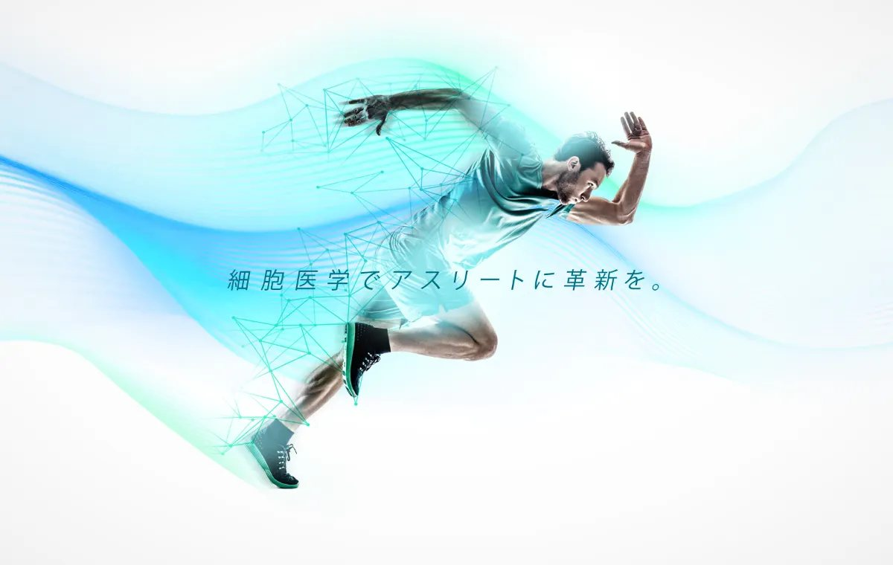
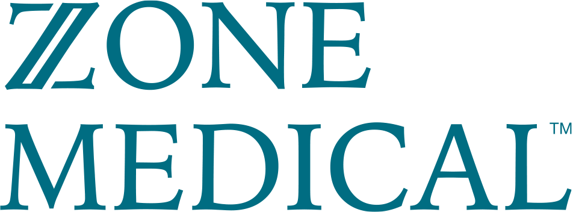
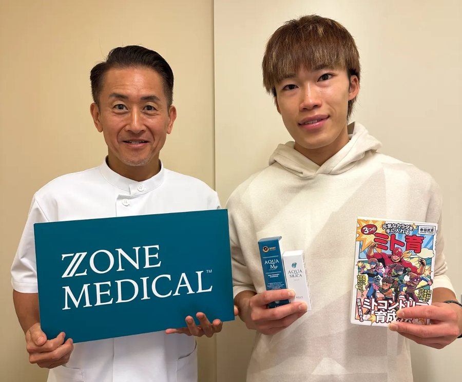
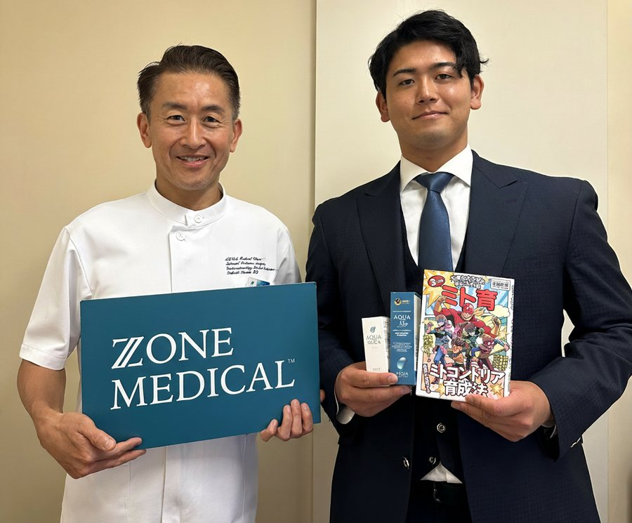
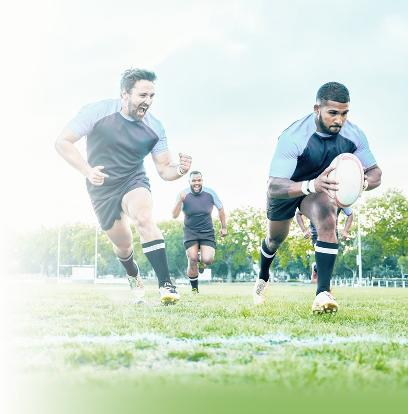
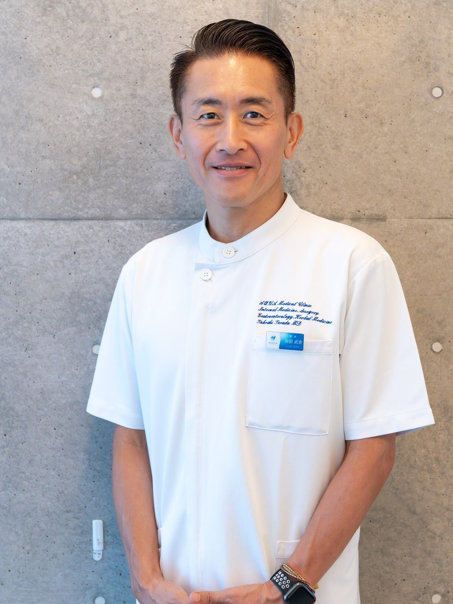

練習も、食事も、睡眠もやっている。それでも噛み合わない日がある。
その原因は、まだ測っていない場所にあるのかもしれません。
力が最大限に出る日と、そうでない日。その差を「気持ち」や「調子」で説明してしまえば、二度と再現できません。ZONE MEDICALは、その差を身体の中の状態の差として捉え、細胞レベルまで見える化します。
目指すのは、一度きりの好調ではありません。最高の状態を、意図して再現できる身体をつくること。そのために私たちは、次の3つを同時に追いかけます。
いま出せていない出力を、身体の内側から引き出す。
炎症と回復力を整え、壊れにくい身体の条件をつくる。
1シーズンではなく、競技人生の全体で戦えるようにする。
一般的なスポーツ栄養が見ているのは、口に入るもの。健康診断が見ているのは、病気かどうか。ZONE MEDICALが見ているのは、細胞が本来の働きをできているかどうかです。同じ栄養素を摂っていても、細胞まで届いて使われているかは、選手によってまったく違います。
何を、どれだけ食べたか。一般的な栄養指導が扱う層。
異常かどうか。健康診断が扱う層。「異常なし」でも、最高とは限らない。
吸収され、運ばれ、細胞の中で実際にエネルギーになっているか。ZONE MEDICALが見る層。
同じ「疲れやすい」でも、原因の層が違えば打つ手は変わります。思い当たるものを、選んでみてください。
※ここに出るのは、その症状の背景として疑って測る価値のある候補です。実際にどれが当てはまるかは、検査で特定します。
検査は、その日の答え合わせで終わるものではありません。一度取ったデータは残り、次の検査と比べられます。一般的な基準値ではなく、あなた自身の平常値が見えてくる。ここからが本当の個別最適です。
「去年のこの時期はこうだった」「この食事のとき血糖はこう動いた」「あのサプリはこの数値に効いた」。積み上がった記録は、来シーズンの判断材料そのものになります。
基準値の内外ではなく、最適値からの距離で読む。鉄・ビタミンB群・亜鉛・タンパク質の充足、炎症、肝腎の負荷まで。
何を食べたとき、いつ血糖が乱れるか。後半の失速や集中の途切れの正体が見える。
ミトコンドリアがエネルギーを作れているか。代謝のどこで詰まっているかを細胞レベルで確認する。
吸収の入口である腸の状態。細菌叢・炎症・消化吸収能。食べても変わらない理由は、ここにあることが多い。
1日のホルモンリズム。オーバートレーニングの兆候と、回復に入れているかどうか。
水銀・鉛・カドミウムなど、体内に溜まった有害金属。代謝とミトコンドリアの働きを妨げ、疲労が抜けない背景になっていることがある。
※すべてを最初から行うわけではありません。初回相談で、いま測る価値のあるものだけを選びます。
検査を売るのが仕事ではありません。競技の結果につながるところまで責任を持つために、ZONE MEDICALは次の4つを約束します。
検査結果の解析、方針の決定、日々のやりとりまで、担当を分けません。分子栄養学専門医が最初から最後まで見ます。
試合、遠征、合宿、オフ。競技カレンダーを先に共有いただき、身体を変える時期と崩さない時期を分けて組みます。
提案するもの・使用中のものを、所属競技団体の規定に照らして事前に確認したうえで設計します。
やりっぱなしにしません。節目ごとに再検査を行い、効いたのか効かなかったのかを数値で確認して次を決めます。
検査結果のレポートを渡されて終わり、では何も変わりません。ZONE MEDICALの中心にあるのは、検査そのものではなく、その後の伴走です。
数値を並べるのではなく、「いま何が起きていて、どこがパフォーマンスを止めているか」「だから何を変えるか」を、競技の文脈に翻訳して説明します。
遠征先のコンビニで何を選ぶか。試合当日の朝食をどうするか。判断に迷う場面はすべて現場で起きます。そこに答えられなければ意味がありません。
理想の食事ができない環境こそ、設計の出番です。移動が続く時期、宿舎の食事、時差。条件に合わせて現実的な形に落とし込みます。
体感が良くても数値が動いていないことも、その逆もあります。定期的に測り直し、次の3ヶ月で何に手をつけるかを決め直します。
身体には、手をつけるべき順番があります。土台が崩れたまま上の層に踏み込んでも、入れたものは働きません。ZONE MEDICALは5つの層を下から順に立て直します。だから、手数が少なくて済みます。
下は、実際にお渡ししている12ヶ月の設計図です。開始時期は選手の競技カレンダーに合わせるため、ここでは「何ヶ月目に何をするか」で示しています。
← 横にスクロールできます →
※上図は標準的な進め方です。実際の開始時期・順番・期間は、競技カレンダーと検査結果に応じて個別に調整します。
標準の12ヶ月で足りない場合、あるいは特定の課題が明確な場合には、追加の検査・対応を個別にご提案します。
体質的に苦手な代謝経路を把握し、サプリメントの選択そのものを個別化する。
毎日のように食べているものが、静かに炎症を起こしていることがある。数日から数週間、ときに数ヶ月遅れて出るため自覚しにくい反応を、食品ごとに確認する。
ピロリ菌、慢性上咽頭炎、歯性感染など、隠れた炎症源を洗い出す。
身体が整った先の、思考の癖と再現性。勝負どころでの判断を扱う。
チーム単位での検査と栄養設計。指導者・トレーナーとの連携を含む。
※内容・費用は個別にご案内します。

自分に不足している栄養素を明確に知ることで、レース前後の体調管理が大きく変わりました。寺田先生のサポートを通して、特に睡眠の質が上がり、疲労の抜け方がまったく違います。その結果、レースでの集中力やパフォーマンスが安定し、勝負どころで力を発揮できるようになりました。栄養とコーチングの両方を取り入れることで、ようやく「本来の自分」で戦えている感覚があります。

自分がどんな栄養素を必要としているかを理解したことで、食事への意識が大きく変わりました。寺田先生と取り組み始めてから、投球のパフォーマンスに直結しているのを実感しています。さらにコーチングが加わることで、シーズンを通して高いレベルで投げ続けられる体づくりができると強く期待しています。

いきなり12ヶ月に踏み込む必要はありません。1ヶ月のトライアルで、自分の身体に何が起きているかを体感する。そのうえで、次に進むかを決められます。
※自由診療（保険適用外）です。
※サプリメント（カンジダ除菌・デトックス用を含む）は検査結果に応じて別途。

消化器外科医として臨床に立ち続けたのち、分子栄養学へ。著書『なぜ、人は病気になるのか？』『元気なカラダを手に入れる3つのミト育』はいずれもAmazonランキング1位。自身もIRONMANを完走するトライアスリートとして、分子栄養学的アプローチを競技の現場で検証し続けています。検査の解析から日々の伴走まで、担当はすべて医師本人が行います。
競技レベルは限定していません。プロ・実業団・大学・社会人・ジュニアまで、「本気でパフォーマンスを上げたい」という前提が共有できる方であれば対象です。
もっとも大きく身体を変えられるのはオフシーズンなので、そこを起点に組むのが基本です。ただしシーズン中からの開始も可能で、その場合は「崩さない設計」から入り、オフに土台へ踏み込みます。開始時期は初回相談で競技カレンダーを見ながら決めます。
むしろその状態が適しています。ZONE MEDICALは不調を治す場所ではなく、まだ発揮されていないパフォーマンスの余地を探す場所です。現在地を数値で持っておくこと自体が、シーズンを通した判断材料になります。
違います。中心にあるのは検査データの解析と、食事・栄養・睡眠・生活習慣の設計です。サプリメントは、検査結果から必要と判断された場合に、その一部として組み込みます。
使用中のもの・提案するものについて、所属競技団体の規定に照らして事前に確認したうえで設計します。制限がある場合は、初回相談の際に必ずお知らせください。
結果説明や日々のやりとりはZoomとLINEで行います。採血など来院が必要になるタイミングと現実的な進め方は、競技日程を伺ったうえで初回相談で個別に調整します。
項目と状態によって異なりますが、多くの選手はまず「疲労の抜け方」「睡眠」「日中のエネルギーの安定」といった体感の変化から入ります。数値としての答え合わせは、3ヶ月後の再解析で行います。
初回相談は無料です。現在のコンディション、競技の状況、目標を伺ったうえで、
いま測るべきものと、12ヶ月の進め方をご提案します。
お申し込み後、内容を確認のうえ日程調整のご連絡をいたします。
初回相談はZoom・30分、医師・寺田武史が担当します。
※ご回答内容は初回相談の所見作成に使用します。
※自由診療（保険適用外）です。